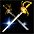
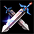
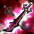
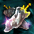
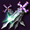
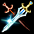
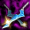
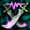
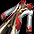
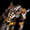

はじめに
■注意
Copyright c 2013 L&K Logic Korea Co., Ltd. All Rights Reserved.
 License to GameOn Co., Ltd.
License to GameOn Co., Ltd.
当サイトで利用している画像及びデータは、株式会社ゲームオンに帰属します。
許可無くご利用又は転用になられる事は出来ませんので、予めご了承下さい。
License to GameOn Co., Ltd. 当サイトで利用している画像及びデータは、株式会社ゲームオンに帰属します。
許可無くご利用又は転用になられる事は出来ませんので、予めご了承下さい。
■Index
雷の落雷
双頭馬車
ドッペルゲンガーブレード
醤油と莫耶
スキーポール
アラビアダンシングソード
ブルールビー
ダークネスブラック
パンパン棒風船
箸の行進曲
世界の2つの柱
双子の星の呪い
黄昏の中の人
炎の二枚貝
初心者検査の見栄
スペアブレード
フロムアルファトゥオメガ
おまけアンドダマー
ワーストパートナー
共生の墓
双頭馬車
ドッペルゲンガーブレード
醤油と莫耶
スキーポール
アラビアダンシングソード
ブルールビー
ダークネスブラック
パンパン棒風船
箸の行進曲
世界の2つの柱
双子の星の呪い
黄昏の中の人
炎の二枚貝
初心者検査の見栄
スペアブレード
フロムアルファトゥオメガ
おまけアンドダマー
ワーストパートナー
共生の墓
アンホーリークルセイダー
スピンカッター
ダブルハート
雌雄日大剣
外耳数の角
超光子発現剣一閃
孤独の一本道
対魔剣エリーゼ、テレジェストーレ
剣帝
ソニックXブレード
雷の落雷[Nx]
双頭馬車[Nx]
ドッペルゲンガーブレード[Nx]
醤油と莫耶[Nx]
スキーポール[Nx]
アラビアダンシングソード[Nx]
ブルールビー[Nx]
ダークネスブラック[Nx]
パンパン棒風船[Nx]
箸のマーチ[Nx]
スピンカッター
ダブルハート
雌雄日大剣
外耳数の角
超光子発現剣一閃
孤独の一本道
対魔剣エリーゼ、テレジェストーレ
剣帝
ソニックXブレード
雷の落雷[Nx]
双頭馬車[Nx]
ドッペルゲンガーブレード[Nx]
醤油と莫耶[Nx]
スキーポール[Nx]
アラビアダンシングソード[Nx]
ブルールビー[Nx]
ダークネスブラック[Nx]
パンパン棒風船[Nx]
箸のマーチ[Nx]
詳細情報
雷の落雷 <Basic Information> - O.P[14]〜[22]（1.80Second） - Shooting range100 - ダメージ+50％ - スタン攻撃+20％（2秒） - 光ダメージ10〜17 - 5秒の間命中、回避低下 <Instruction> - 右手の剣を振り回すと雷の音が鳴って、左手の剣を振り回すに雷が落ちるという神妙な魔法剣。何よりも見た目がかっこよすぎて双剣を使用して検査が最も欲しがるの剣である。 <Required Ability> - Level 83 - Power 30 - Knowledge 10 <Put on/Job Available> - NecroMancer - BeastMan

双頭馬車 <Basic Information> - O.P[16]〜[24]（1.60Second） - Shooting range100 - ダメージ+85％ - 攻撃速度+25％ - クリティカル発動確率+10％ <Instruction> - 馬車を安定的に引く二フィルの言葉のように、流麗でシャープな剣術を駆使できるように支援する二本の剣。お互いの動きの妨げにならないように軽量でシャープなのが特徴である。 <Required Ability> - Level 96 - Power 42 - Knowledge 30 <Put on/Job Available> - NecroMancer - BeastMan

ドッペルゲンガーブレード <Basic Information> - O.P[22]〜[36]（1.80Second） - Shooting range100 - ダメージ+60％ - 敵に与えたダメージの8％を体力で吸収する。 - CP獲得ボーナス30％ - 鎧破壊攻撃+50％（8秒） <Instruction> - まるでドッペルゲンガーのように必要に応じて形状を変形させることができる魔法の剣。右手に持った剣で、まず形をコピーすると、左手にかかる剣がそれを再びコピーするメカニズムを持っている。 <Required Ability> - Level 115 - Power 47 - Knowledge 47 <Put on/Job Available> - NecroMancer - BeastMan
醤油と莫耶 <Basic Information> - O.P[18]〜[29]（1.60Second） - Shooting range100 - クリティカル+[＃0:4〜8]％ - ダメージ+110％ - CP獲得ボーナス45％ - 攻撃速度+35％ <Instruction> - 伝説の鍛冶屋が、王の命令に基づいて作った二本の剣。鍛冶屋の妻が火鉢に身を投げて霊性を持つようになった。最終的には鍛冶屋は優れた武士にお願いして、この剣たちに王の首を施したとする。 <Required Ability> - Level 83 - Power 28 - Knowledge 15 <Put on/Job Available> - NecroMancer - BeastMan
スキーポール <Basic Information> - O.P[27]〜[40]（1.60Second） - Shooting range100 - 攻撃速度+[＃0:1〜3]％ - 水ダメージ15〜24 - コールド40Frame - 最大CP+80 - 最大CP+20％ <Instruction> - 雪原で楽しむレジャースポーツであるスキーをするために必要なツール。ターンをしたり、坂道を登るときにバランスを維持するように助けてくれる。先端が尖って剣の代わりに使うことができるようだ。 <Required Ability> - Level 142 - Power 80 - Knowledge 45 <Put on/Job Available> - NecroMancer - BeastMan
アラビアダンシングソード <Basic Information> - O.P[15]〜[23]（1.40Second） - Shooting range100 - クリティカル+[＃0:4〜8]％ - 力+7 - 知識+7 - ダメージ+80％ - 命中率+30％ - 闇ダメージ27〜37 - 呪い17秒 <Instruction> - ゆらゆらな装いのダンサーが剣の舞を踊るときに使用する双剣。華やかに飾って鋭い予想を消した。ダンサーの踊りをぼうっと見ている間は、双剣に首ベールかもしれない。 <Required Ability> - Level 89 - Power 25 - Knowledge 25 <Put on/Job Available> - NecroMancer - BeastMan
ブルールビー <Basic Information> - O.P[57]〜[63]（1.80Second） - Shooting range100 - ダメージ+100％ - 最大CP+10％ - 攻撃速度+15％ - 光ダメージ1〜90 - 3秒の間命中、回避低下 - 5秒間、毎秒34〜46の毒ダメージ <Instruction> - 通称サファイアと呼ばれる宝石は、ルビーのような鉱物の結晶に色が違う。ここに着目した、優れたジュエリーデザイナーが腕のいい鍛冶屋と心を一つにして作った二本の剣。光の角度によってルビーにも、サファイアにも見えるのが特徴である美しい双剣である。 <Required Ability> - Level 451 - Power 134 - Knowledge 95 <Put on/Job Available> - NecroMancer - BeastMan

ダークネスブラック <Basic Information> - O.P[68]〜[77]（1.60Second） - Shooting range100 - クリティカル+[＃0:1〜2]％ - ダメージ+120％ - 力+1/レベル6 - 攻撃速度+5％ - ノックアウト攻撃+50％ - 闇属性ダメージ吸収33％ <Instruction> - 暗とも同じ黒色の剣二本には、所有者の深い怒りと憎しみが込められている。ハンドルの端の部分が普通の鉄の色であることを見た時は怒りと憎しみが、この双剣を暗い色に染めたようだ。 <Required Ability> - Level 491 - Power 154 - Knowledge 120 <Put on/Job Available> - NecroMancer - BeastMan
パンパン棒風船 <Basic Information> - O.P[71]〜[83]（1.60Second） - Shooting range100 - クリティカル+[＃0:1〜2]％ - 最大体力+80 - 減少限界CP+80 - 攻撃速度+40％ - クリティカル抵抗+10％ - 神獣型キャラクターに追加で150％のダメージを与える。 <Instruction> - 好きなチームを応援するときのツールとして使用する棒風船。片手に一つずつ持って、お互いをぶつけるとパンパンと音がとても冷たいれるように響く。これさすがに剣として使用できるかどうかは分からない。 <Required Ability> - Level 504 - Power 206 - Knowledge 140 <Put on/Job Available> - NecroMancer - BeastMan
箸の行進曲 <Basic Information> - O.P[91]〜[109]（1.80Second） - Shooting range100 - ダメージ+210％ - 健康+1/レベル4 - 防御力+50 - クリティカル発動確率+8％ - 15秒間、毎秒34〜38の毒ダメージ - 動物型キャラクターに追加で40％のダメージを与える。 <Instruction> - 優れた作曲家アルトィルの同名の曲を素材に制作した双剣。非常に細く、まるで箸とも同じ形ですが、相手を非常に深く刺してしまうことがある凶器だ。 <Required Ability> - Level 752 - Power 300 - Knowledge 200 <Put on/Job Available> - NecroMancer - BeastMan

世界の2つの柱 <Basic Information> - O.P[86]〜[102]（1.80Second） - Shooting range90 - ダメージ+150％ - 力+120 - 攻撃者の命中率補正値無視 - 状態異常系抵抗+15％ - アンデッド型キャラクターに追加で70％のダメージを与える。 <Instruction> - 世界を支える二本の柱を抜いて、魔法の力で製錬した双剣。普通の形ですが、この二本の黒い世界の重量をそのまま差しているので、あまりにも重い。 <Required Ability> - Level 581 - Power 237 - Knowledge 237 <Put on/Job Available> - NecroMancer - BeastMan
双子の星の呪い <Basic Information> - O.P[63]〜[69]（1.40Second） - Shooting range100 - ダメージ+120％ - 防御力+25 - 命中率+10％ - 混乱攻撃+99％（3秒） - 即死攻撃+1％ <Instruction> - 呪われた13日のみ観測することができる双子の星の下製錬した剣。炎に輝くこの二本の黒い濃い魔力を含んでいるが、着用者を罵倒すると知られている。 <Required Ability> - Level 473 - Power 180 - Knowledge 180 <Put on/Job Available> - NecroMancer - BeastMan
黄昏の中の人 <Basic Information> - O.P[106]〜[119]（2.00Second） - Shooting range100 - 最大体力+150％ - 最小ダメージ+15 - 攻撃速度+20％ - 鎧破壊攻撃+3％（25秒） - スキルレベル+2 - ターゲットの光抵抗を33％弱化させる。 <Instruction> - 剣の名前は、人、そして鞘名前は黄昏。普通の検査であれば、人が持って戦いに臨んだが、優れた検査であれば、黄昏も一緒に使って敵を撃殺する。剣と同じくらい鋭く危険な鞘が特徴的なこの黒いので、黄昏の中の人と呼ばれる。 <Required Ability> - Level 607 - Power 282 - Knowledge 282 <Put on/Job Available> - NecroMancer - BeastMan
炎の二枚貝 <Basic Information> - O.P[103]〜[114]（2.00Second） - Shooting range100 - 知識+1/レベル4 - 最大ダメージ+42 - 攻撃速度+15％ - 光ダメージ1〜1100 - 2秒の間命中、回避低下 - 火属性抵抗力+25％ - 光属性攻撃力を115％強化させる。 <Instruction> - 長い間鍛えた武道家の堅い二本の足のように広がって出てくる剣撃が敵を破壊してしまうという魔法の剣。剣を引き出すたびに、空気中のイヴサンを乗せて火を起こすの炎二枚貝という名前で呼ばれる。 <Required Ability> - Level 541 - Power 198 - Knowledge 198 <Put on/Job Available> - NecroMancer - BeastMan
初心者検査の見栄 <Basic Information> - O.P[110]〜[125]（2.00Second） - Shooting range90 - クリティカル+[＃0:5〜10]％ - ダメージ+200％ - 防御力+30％ - 攻撃速度+15％ - 即死攻撃+4％ - 火属性ダメージ吸収20％ <Instruction> - 二刀流を大事にするのはかなり熟練した検査ではなく、立たなければ意欲も出すのは難しい。しかし、双剣を扱うのはかなりかっこいいので、初心者のテストは、何も知らず双剣を使用する。そして程なくして命を失う。この黒いそんな初歩検査者に捧げるレクイエムです。 <Required Ability> - Level 739 - Power 404 - Knowledge 275 <Put on/Job Available> - NecroMancer - BeastMan

スペアブレード <Basic Information> - O.P[10]〜[15]（1.40Second） - Shooting range100 - vs人型キャラクター - ダメージ+[＃0:10〜10]％ - 敏捷性+32 - 最大ダメージ+20 - 水ダメージ16〜29 - コールド12Frame - 水属性抵抗+48％ - スキルレベル+1 <Instruction> - 珍しい形ですが、決して珍しいことではない剣。それもそのはず、この剣の所有者がもし剣を失ってしまったり、剣が破損した場合に備えて、同じ形の剣を何百もの袋や作り置きからである。だから今の剣が元なのか、それともスペアブレードかは主人さえ知ることができない。 <Required Ability> - Level 81 - Power 5 - Knowledge 10 <Put on/Job Available> - NecroMancer - BeastMan
フロムアルファトゥオメガ <Basic Information> - O.P[19]〜[30]（2.00Second） - Shooting range100 - クリティカル+[＃0:5〜10]％ - 健康+52 - ダメージ+95％ - 移動速度+30％ - 集中力+5％ <Instruction> - 最初から最後まで剣のすべてを込めた二本の剣。一本では、剣の極意をすべて表現できないからだという制作者の言葉通り、二本の黒いそれぞれ斬りと突きのこつを含んでいる。 <Required Ability> - Level 101 - Power 15 - Knowledge 15 <Put on/Job Available> - NecroMancer - BeastMan
おまけアンドダマー <Basic Information> - O.P[33]〜[44]（2.00Second） - Shooting range90 - 攻撃速度+[＃0:2〜6]％ - 知恵+55 - ダメージ+80％ - 最大体力+100％ - 復活の5％ - 魔法アイテムドロップ確率+20％ <Instruction> - 最も殺して迎えたが、見る人々に笑いを、あるいは過敏を誘発させた2つのテストの遺産。おまけアンドダマーというニックネームらしく二本の剣を同時に使用すると、妙に剣術がこじれた。 <Required Ability> - Level 143 - Power 50 - Knowledge 55 <Put on/Job Available> - NecroMancer - BeastMan
ワーストパートナー <Basic Information> - O.P[27]〜[43]（1.80Second） - Shooting range100 - クリティカル+[＃0:1〜2]％ - 力+50 - 知識+50 - ダメージ+110％ - 魔法抵抗+15％ - スキルレベル+1 <Instruction> - あってはならない二種類の鉱石で作られた剣。製作方式もデザインも正反対の傾向を追求したため、常にお互いを押し出す性質を持った。この双剣を使用するには、元気に剣を押す境地に達しなければならない。 <Required Ability> - Level 179 - Power 90 - Knowledge 115 <Put on/Job Available> - NecroMancer - BeastMan
共生の墓 <Basic Information> - O.P[32]〜[50]（1.80Second） - Shooting range100 - 最小ダメージ+10 - 最大ダメージ+10 - ダメージ+150％ - 攻撃速度+5％ - 水ダメージ5〜10 - コールド40Frame <Instruction> - 水が流れるように継続して続く剣術を使用するために最適な剣。一本の剣では不可能な行動も不思議は二刀流を使用すると、とても簡単に可能となる。だから検査は、この二本の剣が互いに共存すると思う。 <Required Ability> - Level 179 - Power 75 - Knowledge 90 <Put on/Job Available> - NecroMancer - BeastMan

アンホーリークルセイダー <Basic Information> - O.P[40]〜[55]（2.00Second） - Shooting range100 - すべてのスキルレベル+[＃0:1〜2] - 知識+95 - ダメージ+20％ - 最大CP+10％ - 集中力+5％ - スキルレベル+3（19系列職業） <Instruction> - 一本は伝説の聖剣。他の一本は恐ろしい邪剣。この二人が会って相性をイルニどんな新兵でも太刀打ちできない。 <Required Ability> - Level 226 - Power 100 - Knowledge 120 <Put on/Job Available> - NecroMancer - BeastMan
スピンカッター <Basic Information> - O.P[58]〜[63]（1.60Second） - Shooting range100 - ダメージ+70％ - 最大ダメージ+30 - 攻撃速度+20％ - 風ダメージ150〜300 - スタン8Frame - コールド抵抗+50％ - 悪魔型キャラクターに追加で50％のダメージを与える。 <Instruction> - 広幅したバーバリアンの必殺技であるぐるぐる回す剣法を使用するために必須と備えなければならない剣。高速回転力も強固に私を立てて近くのすべてを引き裂いて切り取ってしまう。 <Required Ability> - Level 444 - Power 130 - Knowledge 150 <Put on/Job Available> - NecroMancer - BeastMan
ダブルハート- O.P[88]〜[106]（1.80Second） - Shooting range100 - 力+1/レベル5 - 最大ダメージ+25 - 命中率100％ - 即死攻撃+5％ - コールド攻撃+15％（12秒） - 武器破壊攻撃+8％（6秒） - 川の変異魔獣の両方の心を後退装飾した双剣。魔獣の粘り強い生命力が残っているが、心臓は、その所有者に負けない体力と忍耐を付与する。 - Level 696 - Power 280 - Knowledge 330 - NecroMancer - BeastMan
雌雄日大剣 <Basic Information> - O.P[57]〜[62]（1.40Second） - Shooting range90 - 力+35 - クリティカル発動確率+8％ - CP獲得ボーナス3％ - 魔法抵抗+20％ - スキルレベル+2 - 最大体力+15％ <Instruction> - 異国の優しい君主が使用した二本の剣。全体的な見た目は似ていますが、それぞれ男性と女性を象徴する装飾がかかっている。なぜかこの武器を使用すると、人々に認められている優しい君主になるようだ。 <Required Ability> - Level 463 - Power 160 - Knowledge 160 <Put on/Job Available> - NecroMancer - BeastMan
外耳数の角 <Basic Information> - O.P[67]〜[75]（1.60Second） - Shooting range100 - 知識+85 - 最大体力+150 - 決定打発動確率+4％ - 光属性攻撃力を33％強化させる。 - すべての異常系抵抗+50％ - 悪魔型キャラクターに追加で180％のダメージを与える。 <Instruction> - まれに発見された2つの角を持つユニコーンはなく、バイコーンの角製作した剣。強大な魔力だけでなく、神聖力まで浮かべている。 <Required Ability> - Level 480 - Power 180 - Knowledge 200 <Put on/Job Available> - NecroMancer - BeastMan
超光子発現剣一閃 <Basic Information> - O.P[69]〜[80]（1.60Second） - Shooting range100 - vs悪魔型キャラクター - ダメージ+[＃0:50〜55]％ - 知識+1/レベル4 - 力+120 - 攻撃速度+15％ - ノックアウト攻撃+30％ - 闇属性ダメージ吸収50％ - 光ダメージ1〜125 - 2秒の間命中、回避低下 <Instruction> - 光子の力を凝集してゴムナルを生成する剣。平常時には剣のハンドルがあるが、光の魔力をかき集めて、ハンドルに注入すると、瞬く間にゴムナルが生成される。 <Required Ability> - Level 501 - Power 150 - Knowledge 210 <Put on/Job Available> - NecroMancer - BeastMan
孤独の一本道 <Basic Information> - O.P[81]〜[95]（1.80Second） - Shooting range90 - クリティカル+[＃0:3〜5]％ - ダメージ+50％ - 最大CP+50％ - 10秒間、毎秒64〜64の毒ダメージ - コールド攻撃+7％（25秒） - 魔法アイテムドロップ確率+18％ - 攻撃者の命中率補正値無視 <Instruction> - 双剣の道は孤独な一本道である。見かけは派手だが、それほどの実利があるわけでもなく、本格的な論者たちは、使徒の長さだと無視されるからである。それでも双剣の道を歩く者たちは決してあきらめず、孤独な一本道の人生を楽しむ。 <Required Ability> - Level 509 - Power 180 - Knowledge 200 <Put on/Job Available> - NecroMancer - BeastMan
対魔剣エリーゼ、テレジェストーレ <Basic Information> - O.P[120]〜[141]（2.00Second） - Shooting range100 - クリティカル+[＃0:3〜6]％ - ダメージ+240％ - 知識+200 - 光属性攻撃力を15％強化させる。 - ダメージ返す100％ - 最大体力+120％ - スキルレベル+3 <Instruction> - 天才作曲家の悲恋が込められた二本の魔剣。作曲家が愛した女の切ない心が込められており、着用者は休む暇もなく涙を流すという。そしてその涙の量だけ強くなって尖る魔剣だ。 <Required Ability> - Level 818 - Power 340 - Knowledge 462 <Put on/Job Available> - NecroMancer - BeastMan

剣帝 <Basic Information> - O.P[94]〜[112]（1.80Second） - Shooting range100 - クリティカル+[＃0:4〜8]％ - ダメージ+200％ - 回避率+8％ - 攻撃速度+20％ - 敵に与えたダメージの8％を体力で吸収する。 - 打撃を着ると10％の確率でダメージの10％を応急処置する。 - 集中力+20％ <Instruction> - 自他が公認する剣の王。一本で製錬されるのは、世界の法則からずれたため、完成される直前に二本に分裂してしまった。それにも盛り込んでいる能力は素晴らしいし、必然的に剣の王という名前を得た。 <Required Ability> - Level 775 - Power 480 - Knowledge 412 <Put on/Job Available> - NecroMancer - BeastMan
ソニックXブレード <Basic Information> - O.P[87]〜[102]（1.80Second） - Shooting range100 - すべてのスキルレベル+[＃0:3〜3] - ダメージ+165％ - ターゲットの回避率補正値無視 - クリティカル発動確率+25％ - 力+125 - 人間型キャラクターに追加で85％のダメージを与える。 - 鎧破壊攻撃+5％（5秒） <Instruction> - 最初に二刀流を扱った伝説の検査が残した遺物。双剣酒の概念を確立し、実戦で上手に使えるように訓練法まで作ったこの伝説の検査は、残念ながら、激戦中に彼の双剣で刺され、命を失った。 <Required Ability> - Level 680 - Power 450 - Knowledge 450 <Put on/Job Available> - BeastMan
雷の落雷[Nx] <Basic Information> - O.P[35]〜[55]（1.80Second） - Shooting range100 - ダメージ+70％ - スタン攻撃+20％（2秒） - 光ダメージ10〜217 - 5秒の間命中、回避低下 <Enhanced Information> - アイテム着用レベル-40 - ダメージ+20％ - 最終的なダメージ+10％ - ダブルクリティカルダメージ10％増加 <Instruction> - 右手の剣を振り回すと雷の音が鳴って、左手の剣を振り回すに雷が落ちるという神妙な魔法剣。何よりも見た目がかっこよすぎて双剣を使用して検査が最も欲しがるの剣である。※封印された力を開放するためにポータブル開放ツールする必要があります。 <Required Ability> - Level 166 - Power 30 - Knowledge 10 <Put on/Job Available> - NecroMancer - BeastMan
双頭馬車[Nx] <Basic Information> - O.P[43]〜[58]（1.60Second） - Shooting range100 - ダメージ+115％ - 攻撃速度+25％ - クリティカル発動確率+15％ <Enhanced Information> - アイテム着用レベル-40 - ダメージ+20％ - 最終的なダメージ+10％ - 最終的なダメージ+10％ <Instruction> - 馬車を安定的に引く二フィルの言葉のように、流麗でシャープな剣術を駆使できるように支援する二本の剣。お互いの動きの妨げにならないように軽量でシャープなのが特徴だ。※封印された力を開放するためにポータブル開放ツールする必要があります。 <Required Ability> - Level 152 - Power 42 - Knowledge 30 <Put on/Job Available> - NecroMancer - BeastMan
ドッペルゲンガーブレード[Nx] <Basic Information> - O.P[39]〜[80]（1.80Second） - Shooting range100 - ダメージ+120％ - 敵に与えたダメージの10％を体力で吸収する。 - CP獲得ボーナス30％ - 鎧破壊攻撃+50％（8秒） <Enhanced Information> - アイテム着用レベル-40 - ダメージ+20％ - 最終的なダメージ+10％ - ダブルクリティカルダメージ10％増加 <Instruction> - まるでドッペルゲンガーのように必要に応じて形状を変形させることができる魔法の剣。右手に持った剣で、まず形をコピーすると、左手にかかる剣がそれを再びコピーするメカニズムを持っている。※封印された力を開放するためにポータブル開放ツールする必要があります。 <Required Ability> - Level 230 - Power 47 - Knowledge 47 <Put on/Job Available> - NecroMancer - BeastMan
醤油と莫耶[Nx] <Basic Information> - O.P[48]〜[66]（1.60Second） - Shooting range100 - クリティカル+[＃0:4〜8]％ - ダメージ+130％ - CP獲得ボーナス50％ - 攻撃速度+35％ <Enhanced Information> - アイテム着用レベル-40 - ダメージ+20％ - 最終的なダメージ+10％ - ダブルクリティカルダメージ10％増加 <Instruction> - 伝説の鍛冶屋が、王の命令に基づいて作った二本の剣。鍛冶屋の妻が火鉢に身を投げて霊性を持つようになった。最終的には鍛冶屋は優れた武士にお願いして、この剣たちに王の首を施したという。※封印された力を開放するためにポータブル開放ツールする必要があります。 <Required Ability> - Level 345 - Power 28 - Knowledge 15 <Put on/Job Available> - NecroMancer - BeastMan
スキーポール[Nx] <Basic Information> - O.P[40]〜[53]（1.60Second） - Shooting range100 - 攻撃速度+[＃0:1〜3]％ - 水ダメージ240〜340 - コールド40Frame - 最大CP+150 - 最大CP+20％ <Enhanced Information> - アイテム着用レベル-80 - ダメージ+40％ - 最終的なダメージ+10％ - ダブルクリティカルダメージ10％増加 <Instruction> - 雪原で楽しむレジャースポーツであるスキーをするために必要なツール。ターンをしたり、坂道を登るときにバランスを維持するように助けてくれる。先端が尖って剣の代わりに使うことができるようだ。※封印された力を開放するためにポータブル開放ツールする必要があります。 <Required Ability> - Level 284 - Power 80 - Knowledge 45 <Put on/Job Available> - NecroMancer - BeastMan
アラビアダンシングソード[Nx] <Basic Information> - O.P[29]〜[42]（1.40Second） - Shooting range100 - クリティカル+[＃0:4〜8]％ - 力+100 - 知識+100 - ダメージ+80％ - 命中率+30％ - 闇ダメージ127〜247 - 呪い17秒 <Enhanced Information> - アイテム着用レベル-80 - ダメージ+40％ - 最終的なダメージ+10％ - ダブルクリティカルダメージ10％増加 <Instruction> - ゆらゆらな装いのダンサーが剣の舞を踊るときに使用する双剣。華やかに飾って鋭い予想を消した。ダンサーの踊りをぼうっと見ている間は、双剣に首ベールかもしれない。※封印された力を開放するためにポータブル開放ツールする必要があります。 <Required Ability> - Level 178 - Power 25 - Knowledge 25 <Put on/Job Available> - NecroMancer - BeastMan
ブルールビー[Nx] <Basic Information> - O.P[59]〜[66]（1.80Second） - Shooting range100 - ダメージ+120％ - 最大CP+15％ - 攻撃速度+15％ - 光ダメージ1〜900 - 3秒の間命中、回避低下 - 5秒間、毎秒144〜236の毒ダメージ <Enhanced Information> - アイテム着用レベル-80 - ダメージ+40％ - 最終的なダメージ+10％ - ダブルクリティカルダメージ10％増加 <Instruction> - 通称サファイアと呼ばれる宝石は、ルビーのような鉱物の結晶に色が違う。ここに着目した、優れたジュエリーデザイナーが腕のいい鍛冶屋と心を一つにして作った二本の剣。光の角度によってルビーにも、サファイアにも見えるのが特徴である美しい双剣です。※封印された力を開放するためにポータブル開放ツールする必要があります。 <Required Ability> - Level 451 - Power 134 - Knowledge 95 <Put on/Job Available> - NecroMancer - BeastMan
ダークネスブラック[Nx] <Basic Information> - O.P[70]〜[79]（1.60Second） - Shooting range100 - クリティカル+[＃0:1〜2]％ - ダメージ+135％ - 力+1/レベル5 - 攻撃速度+5％ - ノックアウト攻撃+50％ - 闇属性ダメージ吸収33％ <Enhanced Information> - アイテム着用レベル-60 - ダメージ+30％ - 最終的なダメージ+10％ - ダブルクリティカルダメージ10％増加 <Instruction> - 暗とも同じ黒色の剣二本には、所有者の深い怒りと憎しみが込められている。ハンドルの端の部分が普通の鉄の色であることを見た時は怒りと憎しみが、この双剣を暗い色に染めたようだ。※封印された力を開放するためにポータブル開放ツールする必要があります。 <Required Ability> - Level 491 - Power 154 - Knowledge 120 <Put on/Job Available> - NecroMancer - BeastMan
パンパン棒風船[Nx] <Basic Information> - O.P[78]〜[88]（1.60Second） - Shooting range100 - クリティカル+[＃0:1〜2]％ - 最大体力+250 - 減少限界CP+80 - 攻撃速度+40％ - クリティカル抵抗+15％ - 神獣型キャラクターに追加で150％のダメージを与える。 <Enhanced Information> - アイテム着用レベル-60 - ダメージ+30％ - 最終的なダメージ+10％ - ダブルクリティカルダメージ10％増加 <Instruction> - 好きなチームを応援するときのツールとして使用する棒風船。片手に一つずつ持って、お互いをぶつけるとパンパンと音がとても冷たいれるように響く。これさすがに剣として使用できるかどうかは分からない。※封印された力を開放するためにポータブル開放ツールする必要があります。 <Required Ability> - Level 504 - Power 206 - Knowledge 140 <Put on/Job Available> - NecroMancer - BeastMan
箸のマーチ[Nx] <Basic Information> - O.P[105]〜[147]（1.80Second） - Shooting range100 - ダメージ+220％ - 健康+1/レベル3 - 防御力+50 - クリティカル発動確率+10％ - 15秒間、毎秒334〜438の毒ダメージ - 動物型キャラクターに追加で40％のダメージを与える。 <Enhanced Information> - アイテム着用レベル-60 - ダメージ+30％ - 最終的なダメージ+10％ - ダブルクリティカルダメージ10％増加 <Instruction> - 優れた作曲家アルトィルの同名の曲を素材に制作した双剣。非常に細く、まるで箸とも同じ形ですが、相手を非常に深く刺してしまうことがある凶器だ。※封印された力を開放するためにポータブル開放ツールする必要があります。 <Required Ability> - Level 752 - Power 300 - Knowledge 200 <Put on/Job Available> - NecroMancer - BeastMan
世界の2つの柱[Nx] <Basic Information> - O.P[115]〜[127]（1.80Second） - Shooting range90 - ダメージ+160％ - 力+180 - 攻撃者の命中率補正値無視 - 状態異常系抵抗+15％ - アンデッド型キャラクターに追加で90％のダメージを与える。 <Enhanced Information> - アイテム着用レベル-70 - ダメージ+50％ - 最終的なダメージ+10％ - ダブルクリティカルダメージ10％増加 <Instruction> - 世界を支える二本の柱を抜いて、魔法の力で製錬した双剣。普通の形ですが、この二本の黒い世界の重量をそのまま差しているので、あまりにも重い。※封印された力を開放するためにポータブル開放ツールする必要があります。 <Required Ability> - Level 581 - Power 237 - Knowledge 237 <Put on/Job Available> - NecroMancer - BeastMan
双子の星の呪い[Nx] <Basic Information> - O.P[65]〜[77]（1.40Second） - Shooting range100 - ダメージ+130％ - 防御力+30 - 命中率+13％ - 混乱攻撃+99％（3秒） - 即死攻撃+2％ <Enhanced Information> - アイテム着用レベル-70 - ダメージ+50％ - 最終的なダメージ+10％ - ダブルクリティカルダメージ10％増加 <Instruction> - 呪われた13日のみ観測することができる双子の星の下製錬した剣。炎に輝くこの二本の黒い濃い魔力を含んでいるが、着用者を罵倒すると言われています。※封印された力を開放するためにポータブル開放ツールする必要があります。 <Required Ability> - Level 473 - Power 180 - Knowledge 180 <Put on/Job Available> - NecroMancer - BeastMan
黄昏の中の人[Nx] <Basic Information> - O.P[106]〜[185]（2.00Second） - Shooting range100 - 最大体力+170％ - 最小ダメージ+20 - 攻撃速度+20％ - 鎧破壊攻撃+10％（25秒） - スキルレベル+3 - ターゲットの光抵抗を33％弱化させる。 <Enhanced Information> - アイテム着用レベル-70 - ダメージ+50％ - 最終的なダメージ+10％ - ダブルクリティカルダメージ10％増加 <Instruction> - 剣の名前は、人、そして鞘名前は黄昏。普通の検査であれば、人が持って戦いに臨んだが、優れた検査であれば、黄昏も一緒に使って敵を撃殺する。剣と同じくらい鋭く危険な鞘が特徴的なこの黒いので、黄昏の中の人と呼ばれる。※封印された力を開放するためにポータブル開放ツールする必要があります。 <Required Ability> - Level 607 - Power 282 - Knowledge 282 <Put on/Job Available> - NecroMancer - BeastMan
炎の二枚貝[Nx] <Basic Information> - O.P[123]〜[145]（2.00Second） - Shooting range100 - 知識+1/レベル3 - 最大ダメージ+45 - 攻撃速度+20％ - 光ダメージ1〜2200 - 2秒の間命中、回避低下 - 火属性抵抗力+25％ - 光属性攻撃力を115％強化させる。 <Enhanced Information> - アイテム着用レベル-70 - ダメージ+50％ - 最終的なダメージ+10％ - ダブルクリティカルダメージ10％増加 <Instruction> - 長い間鍛えた武道家の堅い二本の足のように広がって出てくる剣撃が敵を破壊してしまうという魔法の剣。剣を引き出すたびに、空気中のイヴサンを乗せて火を起こすの炎二枚貝という名前で呼ばれる。※封印された力を開放するためにポータブル開放ツールする必要があります。 <Required Ability> - Level 541 - Power 198 - Knowledge 198 <Put on/Job Available> - NecroMancer - BeastMan
初心者検査の見栄[Nx] <Basic Information> - O.P[143]〜[145]（2.00Second） - Shooting range90 - クリティカル+[＃0:5〜10]％ - ダメージ+220％ - 防御力+30％ - 攻撃速度+20％ - 即死攻撃+5％ - 火属性ダメージ吸収25％ <Enhanced Information> - アイテム着用レベル-90 - ダメージ+60％ - 最終的なダメージ+10％ - ダブルクリティカルダメージ10％増加 <Instruction> - 二刀流を大事にするのはかなり熟練した検査ではなく、立たなければ意欲も出すのは難しい。しかし、双剣を扱うのはかなりかっこいいので、初心者のテストは、何も知らず双剣を使用する。そして程なくして命を失う。この黒いそんな初歩検査者に捧げるレクイエムです。※封印された力を開放するためにポータブル開放ツールする必要があります。 <Required Ability> - Level 739 - Power 404 - Knowledge 275 <Put on/Job Available> - NecroMancer - BeastMan
スペアブレード[Nx] <Basic Information> - O.P[45]〜[60]（1.40Second） - Shooting range100 - vs人型キャラクター - ダメージ+[＃0:10〜10]％ - 敏捷+132 - 最大ダメージ+30 - 水ダメージ266〜279 - コールド12Frame - 水属性抵抗+48％ - スキルレベル+2 <Enhanced Information> - アイテム着用レベル-40 - ダメージ+20％ - 最終的なダメージ+10％ - ダブルクリティカルダメージ10％増加 <Instruction> - 珍しい形ですが、決して珍しいことではない剣。それもそのはず、この剣の所有者がもし剣を失ってしまったり、剣が破損した場合に備えて、同じ形の剣を何百もの袋や作り置きからである。だから今の剣が元なのか、それともスペアブレードかは主人さえ知ることができない。※封印された力を開放するためにポータブル開放ツールする必要があります。 <Required Ability> - Level 162 - Power 5 - Knowledge 10 <Put on/Job Available> - NecroMancer - BeastMan
フロムアルファトゥオメガ[Nx] <Basic Information> - O.P[33]〜[53]（2.00Second） - Shooting range100 - クリティカル+[＃0:5〜10]％ - 健康+152 - ダメージ+125％ - 移動速度+40％ - 集中力+15％ <Enhanced Information> - アイテム着用レベル-40 - ダメージ+20％ - 最終的なダメージ+10％ - ダブルクリティカルダメージ10％増加 <Instruction> - 最初から最後まで剣のすべてを込めた二本の剣。一本では、剣の極意をすべて表現できないからだという制作者の言葉通り、二本の黒いそれぞれ斬りと突きのこつを含んでいる。※封印された力を開放するためにポータブル開放ツールする必要があります。 <Required Ability> - Level 201 - Power 15 - Knowledge 15 <Put on/Job Available> - NecroMancer - BeastMan
おまけアンドダマー[Nx] <Basic Information> - O.P[55]〜[70]（2.00Second） - Shooting range90 - 攻撃速度+[＃0:2〜6]％ - 知恵+155 - ダメージ+100％ - 最大体力+100％ - 復活25％ - 魔法アイテムドロップ確率+30％ <Enhanced Information> - アイテム着用レベル-40 - ダメージ+20％ - 最終的なダメージ+10％ - ダブルクリティカルダメージ10％増加 <Instruction> - 最も殺して迎えたが、見る人々に笑いを、あるいは過敏を誘発させた2つのテストの遺産。おまけアンドダマーというニックネームらしく二本の剣を同時に使用すると、妙に剣術が狂う。※封印された力を開放するためにポータブル開放ツールする必要があります。 <Required Ability> - Level 243 - Power 50 - Knowledge 55 <Put on/Job Available> - NecroMancer - BeastMan
ワーストパートナー[Nx] <Basic Information> - O.P[50]〜[71]（1.80Second） - Shooting range100 - クリティカル+[＃0:1〜2]％ - 力+150 - 知識+150 - ダメージ+110％ - 魔法抵抗+18％ - スキルレベル+3 <Enhanced Information> - アイテム着用レベル-40 - ダメージ+20％ - 最終的なダメージ+10％ - ダブルクリティカルダメージ10％増加 <Instruction> - あってはならない二種類の鉱石で作られた剣。製作方式もデザインも正反対の傾向を追求したため、常にお互いを押し出す性質を持った。この双剣を使用するには、元気に剣を押す境地に達しなければならない。※封印された力を開放するためにポータブル開放ツールする必要があります。 <Required Ability> - Level 321 - Power 90 - Knowledge 115 <Put on/Job Available> - NecroMancer - BeastMan
共生の墓[Nx] <Basic Information> - O.P[40]〜[92]（1.80Second） - Shooting range100 - 最小ダメージ+15 - 最大ダメージ+15 - ダメージ+150％ - 攻撃速度+10％ - 水ダメージ50〜100 - コールド40Frame <Enhanced Information> - アイテム着用レベル-80 - ダメージ+40％ - 最終的なダメージ+10％ - ダブルクリティカルダメージ10％増加 <Instruction> - 水が流れるように継続して続く剣術を使用するために最適な剣。一本の剣では不可能な行動も不思議は二刀流を使用すると、とても簡単に可能となる。だから検査は、この二本の剣が互いに共存すると考える。※封印された力を開放するためにポータブル開放ツールする必要があります。 <Required Ability> - Level 378 - Power 75 - Knowledge 90 <Put on/Job Available> - NecroMancer - BeastMan
アンホーリークルセイダー[Nx] <Basic Information> - O.P[67]〜[80]（2.00Second） - Shooting range100 - すべてのスキルレベル+[＃0:1〜2] - 知識+195 - ダメージ+50％ - 最大CP+20％ - 集中力+5％ - スキルレベル+5（19系列職業） <Enhanced Information> - アイテム着用レベル-80 - ダメージ+40％ - 最終的なダメージ+10％ - ダブルクリティカルダメージ10％増加 <Instruction> - 一本は伝説の聖剣。他の一本は恐ろしい邪剣。この二人が会って相性をイルニどんな新兵でも太刀打ちできない。※封印された力を開放するためにポータブル開放ツールする必要があります。 <Required Ability> - Level 326 - Power 100 - Knowledge 120 <Put on/Job Available> - NecroMancer - BeastMan
スピンカッター[Nx] <Basic Information> - O.P[60]〜[67]（1.60Second） - Shooting range100 - ダメージ+100％ - 最大ダメージ+30 - 攻撃速度+20％ - 風ダメージ450〜550 - スタン8Frame - コールド抵抗+50％ - 悪魔型キャラクターに追加で50％のダメージを与える。 <Enhanced Information> - アイテム着用レベル-80 - ダメージ+40％ - 最終的なダメージ+10％ - ダブルクリティカルダメージ10％増加 <Instruction> - 広幅したバーバリアンの必殺技であるぐるぐる回す剣法を使用するために必須と備えなければならない剣。高速回転力も強固に私を立てて近くのすべてを引き裂いて切り取ってしまう。※封印された力を開放するためにポータブル開放ツールする必要があります。 <Required Ability> - Level 444 - Power 130 - Knowledge 150 <Put on/Job Available> - NecroMancer - BeastMan
雌雄日大剣[Nx] <Basic Information> - O.P[58]〜[63]（1.40Second） - Shooting range90 - 力+110 - クリティカル発動確率+10％ - CP獲得ボーナス5％ - 魔法抵抗+30％ - スキルレベル+3 - 最大体力+25％ <Enhanced Information> - アイテム着用レベル-60 - ダメージ+30％ - 最終的なダメージ+10％ - ダブルクリティカルダメージ10％増加 <Instruction> - 異国の優しい君主が使用した二本の剣。全体的な見た目は似ていますが、それぞれ男性と女性を象徴する装飾がかかっている。なぜかこの武器を使用すると、人々に認められている慈愛の君主となりそうだ。※封印された力を開放するためにポータブル開放ツールする必要があります。 <Required Ability> - Level 463 - Power 160 - Knowledge 160 <Put on/Job Available> - NecroMancer - BeastMan
外耳数の角[Nx] <Basic Information> - O.P[69]〜[77]（1.60Second） - Shooting range100 - 知識+120 - 最大体力+250 - 決定打発動確率+5％ - 光属性攻撃力を33％強化させる。 - すべての異常系抵抗+50％ - 悪魔型キャラクターに追加で180％のダメージを与える。 <Enhanced Information> - アイテム着用レベル-60 - ダメージ+30％ - 最終的なダメージ+10％ - ダブルクリティカルダメージ10％増加 <Instruction> - まれに発見された2つの角を持つユニコーンはなく、バイコーンの角製作した剣。強大な魔力だけでなく、神聖力まで浮かべている。※封印された力を開放するためにポータブル開放ツールする必要があります。 <Required Ability> - Level 480 - Power 180 - Knowledge 200 <Put on/Job Available> - NecroMancer - BeastMan
超光子発現剣一閃[Nx] <Basic Information> - O.P[75]〜[85]（1.60Second） - Shooting range100 - vs悪魔型キャラクター - ダメージ+[＃0:50〜55]％ - 知識+1/レベル3 - 力+170 - 攻撃速度+20％ - ノックアウト攻撃+30％ - 闇属性ダメージ吸収50％ - 光ダメージ1〜1225 - 2秒の間命中、回避低下 <Enhanced Information> - アイテム着用レベル-60 - ダメージ+30％ - 最終的なダメージ+10％ - ダブルクリティカルダメージ10％増加 <Instruction> - 光子の力を凝集してゴムナルを生成する剣。平常時には剣のハンドルがあるが、光の魔力をかき集めて、ハンドルに注入すると、瞬く間にゴムナルが生成される。※封印された力を開放するためにポータブル開放ツールする必要があります。 <Required Ability> - Level 501 - Power 150 - Knowledge 210 <Put on/Job Available> - NecroMancer - BeastMan
孤独な一本道[Nx] <Basic Information> - O.P[99]〜[112]（1.80Second） - Shooting range90 - クリティカル+[＃0:3〜5]％ - ダメージ+80％ - 最大CP+50％ - 10秒間、毎秒664〜964の毒ダメージ - コールド攻撃+7％（25秒） - 魔法アイテムドロップ確率+25％ - 攻撃者の命中率補正値無視 <Enhanced Information> - アイテム着用レベル-70 - ダメージ+50％ - 最終的なダメージ+10％ - ダブルクリティカルダメージ10％増加 <Instruction> - 双剣の道は孤独な一本道である。見かけは派手だが、それほどの実利があるわけでもなく、本格的な論者たちは、使徒の長さだと無視されるからである。それでも双剣の道を歩く者たちは決してあきらめず、孤独な一本道の人生を楽しむ。※封印された力を開放するためにポータブル開放ツールする必要があります。 <Required Ability> - Level 509 - Power 180 - Knowledge 200 <Put on/Job Available> - NecroMancer - BeastMan
ダブルハート[Nx] <Basic Information> - O.P[105]〜[137]（1.80Second） - Shooting range100 - 力+1/レベル4 - 最大ダメージ+25 - 命中率100％ - 即死攻撃+7％ - コールド攻撃+15％（12秒） - 武器破壊攻撃+8％（6秒） <Enhanced Information> - アイテム着用レベル-70 - ダメージ+50％ - 最終的なダメージ+10％ - ダブルクリティカルダメージ10％増加 <Instruction> - 川の変異魔獣の両方の心を後退装飾した双剣。魔獣の粘り強い生命力が残っているが、心臓は、その所有者に負けない体力と忍耐を付与する。※封印された力を開放するためにポータブル開放ツールする必要があります。 <Required Ability> - Level 696 - Power 280 - Knowledge 330 <Put on/Job Available> - NecroMancer - BeastMan
対魔剣エリーゼ、テレジェストーレ[Nx] <Basic Information> - O.P[93]〜[205]（2.00Second） - Shooting range100 - クリティカル+[＃0:3〜6]％ - ダメージ+250％ - 知識+230 - 光属性攻撃力を20％強化させる。 - ダメージ返す100％ - 最大体力+120％ - スキルレベル+4 <Enhanced Information> - アイテム着用レベル-110 - ダメージ+70％ - 最終的なダメージ+10％ - ダブルクリティカルダメージ10％増加 <Instruction> - 天才作曲家の悲恋が込められた二本の魔剣。作曲家が愛した女の切ない心が込められており、着用者は休む暇もなく涙を流すという。そしてその涙の量だけ強くなって尖る魔剣だ。※封印された力を開放するためにポータブル開放ツールする必要があります。 <Required Ability> - Level 818 - Power 340 - Knowledge 462 <Put on/Job Available> - NecroMancer - BeastMan
剣帝[Nx] <Basic Information> - O.P[95]〜[167]（1.80Second） - Shooting range100 - クリティカル+[＃0:4〜8]％ - ダメージ+230％ - 回避率+10％ - 攻撃速度+20％ - 敵に与えたダメージの10％を体力で吸収する。 - 打撃を着ると10％の確率でダメージの15％を応急処置する。 - 集中力+30％ <Enhanced Information> - アイテム着用レベル-110 - ダメージ+70％ - 最終的なダメージ+10％ - ダブルクリティカルダメージ10％増加 <Instruction> - 自他が公認する剣の王。一本で製錬されるのは、世界の法則からずれたため、完成される直前に二本に分裂してしまった。それにも盛り込んでいる能力は素晴らしいし、必然的に剣の王という名前を得た。※封印された力を開放するためにポータブル開放ツールする必要があります。 <Required Ability> - Level 775 - Power 480 - Knowledge 412 <Put on/Job Available> - NecroMancer - BeastMan
ソニックXブレード[Nx] <Basic Information> - O.P[107]〜[130]（1.80Second） - Shooting range100 - すべてのスキルレベル+[＃0:5〜5] - ダメージ+205％ - ターゲットの回避率補正値無視 - クリティカル発動確率+25％ - 力+180 - 人間型キャラクターに追加で85％のダメージを与える。 - 鎧破壊攻撃+10％（5秒） <Enhanced Information> - アイテム着用レベル-130 - ダメージ+50％ - 最終的なダメージ+10％ - ダブルクリティカルダメージ10％増加 <Instruction> - 最初に二刀流を扱った伝説の検査が残した遺物。双剣酒の概念を確立し、実戦で上手に使えるように訓練法まで作ったこの伝説の検査は、残念ながら、激戦中に彼の双剣で刺され、命を失った。※封印された力を開放するためにポータブル開放ツールする必要があります。 <Required Ability> - Level 680 - Power 450 - Knowledge 450 <Put on/Job Available> - BeastMan

テレパシーシンドローム <Basic Information> - O.P[83]〜[99]（1.80Second） - Shooting range100 - クリティカル+[＃0:5〜10]％ - 運+1/レベル6 - クリティカル発動確率+33％ - 攻撃速度+50％ - 鎧破壊攻撃+9％（8秒） - ターゲットの光抵抗を10％弱化させる。 - 集中力+40％ <Instruction> - 右手の剣が振り回されると、それに合わせて左手の剣が自然に動く不思議な剣。両方の剣の間にはテレパシーが流れており、所有者が確実に意図していなくても、水が流れるように自然に剣術が駆使されている。 <Required Ability> - Level 568 - Power 200 - Knowledge 237 <Put on/Job Available> - NecroMancer - BeastMan
テレパシーシンドローム[Nx] <Basic Information> - O.P[105]〜[127]（1.80Second） - Shooting range100 - クリティカル+[＃0:5〜10]％ - 運+1/レベル5 - クリティカル発動確率+40％ - 攻撃速度+50％ - 鎧破壊攻撃+9％（8秒） - ターゲットの光抵抗を20％弱化させる。 - 集中力+40％ <Enhanced Information> - アイテム着用レベル-70 - ダメージ+50％ - 最終的なダメージ+10％ - 最終的なダメージ+10％ <Instruction> - 右手の剣が振り回されると、それに合わせて左手の剣が自然に動く不思議な剣。両方の剣の間にはテレパシーが流れており、所有者が確実に意図していなくても、水が流れるように自然に剣術が駆使されている。※封印された力を開放するためにポータブル開放ツールする必要があります。 <Required Ability> - Level 568 - Power 200 - Knowledge 237 <Put on/Job Available> - NecroMancer - BeastMan
エターナルフューリーI <Basic Information> - O.P[38]〜[56]（1.80Second） - Shooting range100 - ダメージ+50％ - 魔法攻撃力を10％強化させる。 - 攻撃速度+10％ - クリティカル発動確率+2％ - スキルレベル+2 <Instruction> - 古代タンティルリス最高のウェポンマエストロたちが一台集まって神秘のアンビル組織を結成し、神秘の金敷で生産し出した究極の進化形の武器を称して 'エターナルウェポンジュ"と呼んだ。ウェポンマエストロダンテスがデザインした双剣で「失われた性質を取り戻す苦行」をイメージしました。 - 1レベルのハード級マエストロの技術で稲リョネンエターナルフューリー。 <Required Ability> - Level 100 - Power 30 - Knowledge 30 <Put on/Job Available> - BeastMan
エターナルフューリーII <Basic Information> - O.P[50]〜[71]（1.80Second） - Shooting range100 - ダメージ+70％ - 魔法攻撃力を10％強化させる。 - 攻撃速度+15％ - クリティカル発動確率+2％ - スキルレベル+3 <Instruction> - 古代タンティルリス最高のウェポンマエストロたちが一台集まって神秘のアンビル組織を結成し、神秘の金敷で生産し出した究極の進化形の武器を称して 'エターナルウェポンジュ"と呼んだ。ウェポンマエストロダンテスがデザインした双剣で「失われた性質を取り戻す苦行」をイメージしました。 - レベル2スィナイムグプマエストロの技術で稲リョネンエターナルフューリー。 <Required Ability> - Level 200 - Power 70 - Knowledge 70 <Put on/Job Available> - BeastMan
エターナルフューリーIII <Basic Information> - O.P[57]〜[76]（1.80Second） - Shooting range100 - ダメージ+80％ - 魔法攻撃力を15％強化させる。 - 攻撃速度+15％ - クリティカル発動確率+3％ - スキルレベル+4 <Instruction> - 古代タンティルリス最高のウェポンマエストロたちが一台集まって神秘のアンビル組織を結成し、神秘の金敷で生産し出した究極の進化形の武器を称して 'エターナルウェポンジュ"と呼んだ。ウェポンマエストロダンテスがデザインした双剣で「失われた性質を取り戻す苦行」をイメージしました。 - 3レベルのシャロースィグプマエストロの技術で稲リョネンエターナルフューリー。 <Required Ability> - Level 300 - Power 120 - Knowledge 120 <Put on/Job Available> - BeastMan
エターナルフューリーIV <Basic Information> - O.P[68]〜[77]（1.80Second） - Shooting range100 - ダメージ+100％ - 魔法攻撃力を20％強化させる。 - 攻撃速度+20％ - クリティカル発動確率+5％ - スキルレベル+5 <Instruction> - 古代タンティルリス最高のウェポンマエストロたちが一台集まって神秘のアンビル組織を結成し、神秘の金敷で生産し出した究極の進化形の武器を称して 'エターナルウェポンジュ"と呼んだ。ウェポンマエストロダンテスがデザインした双剣で「失われた性質を取り戻す苦行」をイメージしました。 - 4つのレベルアルバ級マエストロの技術で稲リョネンエターナルフューリー。 <Required Ability> - Level 400 - Power 150 - Knowledge 150 <Put on/Job Available> - BeastMan
エターナルフューリーV <Basic Information> - O.P[72]〜[81]（1.80Second） - Shooting range100 - ダメージ+120％ - 魔法攻撃力を20％強化させる。 - 攻撃速度+20％ - クリティカル発動確率+5％ - スキルレベル+6 <Instruction> - 古代タンティルリス最高のウェポンマエストロたちが一台集まって神秘のアンビル組織を結成し、神秘の金敷で生産し出した究極の進化形の武器を称して 'エターナルウェポンジュ"と呼んだ。ウェポンマエストロダンテスがデザインした双剣で「失われた性質を取り戻す苦行」をイメージしました。 - 5レベル下のメッシュ級マエストロの技術で稲リョネンエターナルフューリー。 <Required Ability> - Level 400 - Power 150 - Knowledge 150 <Put on/Job Available> - BeastMan
エターナルフューリーVI <Basic Information> - O.P[103]〜[114]（1.80Second） - Shooting range100 - ダメージ+140％ - 魔法攻撃力を25％強化させる。 - 攻撃速度+25％ - クリティカル発動確率+8％ - スキルレベル+7 <Instruction> - 古代タンティルリス最高のウェポンマエストロたちが一台集まって神秘のアンビル組織を結成し、神秘の金敷で生産し出した究極の進化形の武器を称して 'エターナルウェポンジュ"と呼んだ。ウェポンマエストロダンテスがデザインした双剣で「失われた性質を取り戻す苦行」をイメージしました。 - レベル6社シャグプマエストロの技術で稲リョネンエターナルフューリー。 <Required Ability> - Level 500 - Power 175 - Knowledge 175 <Put on/Job Available> - BeastMan
エターナルフューリーVII <Basic Information> - O.P[106]〜[120]（1.80Second） - Shooting range100 - ダメージ+160％ - 魔法攻撃力を25％強化させる。 - 攻撃速度+25％ - クリティカル発動確率+8％ - スキルレベル+7 <Instruction> - 古代タンティルリス最高のウェポンマエストロたちが一台集まって神秘のアンビル組織を結成し、神秘の金敷で生産し出した究極の進化形の武器を称して 'エターナルウェポンジュ"と呼んだ。ウェポンマエストロダンテスがデザインした双剣で「失われた性質を取り戻す苦行」をイメージしました。 - 7レベルシヴアグプマエストロの技術で稲リョネンエターナルフューリー。 <Required Ability> - Level 500 - Power 175 - Knowledge 175 <Put on/Job Available> - BeastMan
エターナルフューリーVIII <Basic Information> - O.P[110]〜[124]（1.80Second） - Shooting range100 - ダメージ+180％ - 魔法攻撃力を30％強化させる。 - 攻撃速度+30％ - クリティカル発動確率+8％ - スキルレベル+8 <Instruction> - 古代タンティルリス最高のウェポンマエストロたちが一台集まって神秘のアンビル組織を結成し、神秘の金敷で生産し出した究極の進化形の武器を称して 'エターナルウェポンジュ"と呼んだ。ウェポンマエストロダンテスがデザインした双剣で「失われた性質を取り戻す苦行」をイメージしました。 - 8レベルシュモナ級マエストロの技術で稲リョネンエターナルフューリー。 <Required Ability> - Level 600 - Power 200 - Knowledge 200 <Put on/Job Available> - BeastMan
エターナルフューリーVIII[Nx] <Basic Information> - O.P[110]〜[124]（1.80Second） - Shooting range100 - ダメージ+180％ - 魔法攻撃力を30％強化させる。 - 攻撃速度+30％ - クリティカル発動確率+8％ - スキルレベル+8 <Enhanced Information> - アイテム着用レベル-110 - ダメージ+50％ - 最終的なダメージ+10％ - ダブルクリティカルダメージ10％増加 <Instruction> - 古代タンティルリス最高のウェポンマエストロたちが一台集まって神秘のアンビル組織を結成し、神秘の金敷で生産し出した究極の進化形の武器を称して 'エターナルウェポンジュ"と呼んだ。ウェポンマエストロダンテスがデザインした双剣で「失われた性質を取り戻す苦行」をイメージしました。 - 8レベルシュモナ級マエストロの技術で稲リョネンエターナルフューリー。 <Required Ability> - Level 600 - Power 200 - Knowledge 200 <Put on/Job Available> - BeastMan
エターナルフューリーIX <Basic Information> - O.P[115]〜[129]（1.80Second） - Shooting range100 - ダメージ+200％ - 魔法攻撃力を30％強化させる。 - 攻撃速度+30％ - クリティカル発動確率+8％ - スキルレベル+8 <Instruction> - 古代タンティルリス最高のウェポンマエストロたちが一台集まって神秘のアンビル組織を結成し、神秘の金敷で生産し出した究極の進化形の武器を称して 'エターナルウェポンジュ"と呼んだ。ウェポンマエストロダンテスがデザインした双剣で「失われた性質を取り戻す苦行」をイメージしました。 - 9レベルテイシャグプマエストロの技術で稲リョネンエターナルフューリー。 <Required Ability> - Level 600 - Power 200 - Knowledge 200 <Put on/Job Available> - BeastMan
エターナルフューリーIX[Nx] <Basic Information> - O.P[115]〜[129]（1.80Second） - Shooting range100 - ダメージ+200％ - 魔法攻撃力を30％強化させる。 - 攻撃速度+30％ - クリティカル発動確率+8％ - スキルレベル+8 <Enhanced Information> - アイテム着用レベル-110 - ダメージ+50％ - 最終的なダメージ+10％ - ダブルクリティカルダメージ10％増加 <Instruction> - 古代タンティルリス最高のウェポンマエストロたちが一台集まって神秘のアンビル組織を結成し、神秘の金敷で生産し出した究極の進化形の武器を称して 'エターナルウェポンジュ"と呼んだ。ウェポンマエストロダンテスがデザインした双剣で「失われた性質を取り戻す苦行」をイメージしました。 - 9レベルテイシャグプマエストロの技術で稲リョネンエターナルフューリー。 <Required Ability> - Level 600 - Power 200 - Knowledge 200 <Put on/Job Available> - BeastMan
エターナルフューリー'オウェイクニン' <Basic Information> - O.P[125]〜[146]（1.80Second） - Shooting range100 - ダメージ+250％ - 魔法攻撃力を45％強化させる。 - 攻撃速度+35％ - クリティカル発動確率+15％ - スキルレベル+9 <Instruction> - 古代タンティルリス最高のウェポンマエストロたちが一台集まって神秘のアンビル組織を結成し、神秘の金敷で生産し出した究極の進化形の武器を称して 'エターナルウェポンジュ"と呼んだ。ウェポンマエストロダンテスがデザインした双剣で「失われた性質を取り戻す苦行」をイメージしました。 - 10レベルエセル級マエストロの技術で稲リョネン最終型エターナルフューリー。 <Required Ability> - Level 700 - Power 300 - Knowledge 300 <Put on/Job Available> - BeastMan
エターナルフューリー'オウェイクニン'[Nx] <Basic Information> - O.P[125]〜[146]（1.80Second） - Shooting range100 - ダメージ+250％ - 魔法攻撃力を45％強化させる。 - 攻撃速度+35％ - クリティカル発動確率+15％ - スキルレベル+9 <Enhanced Information> - アイテム着用レベル-130 - ダメージ+50％ - 最終的なダメージ+10％ - ダブルクリティカルダメージ10％増加 <Instruction> - 古代タンティルリス最高のウェポンマエストロたちが一台集まって神秘のアンビル組織を結成し、神秘の金敷で生産し出した究極の進化形の武器を称して 'エターナルウェポンジュ"と呼んだ。ウェポンマエストロダンテスがデザインした双剣で「失われた性質を取り戻す苦行」をイメージしました。 - 10レベルエセル級マエストロの技術で稲リョネン最終型エターナルフューリー。 <Required Ability> - Level 700 - Power 300 - Knowledge 300 <Put on/Job Available> - BeastMan

赤血の耳 <Basic Information> - Mini-pet Food Type Energy type - 防御力+[＃0:11〜14] - クリティカル+[＃1:1〜3]％ - 防御力+75％ - 力+50 - 知識+50 - 攻撃速度+17％ <Instruction> - 血に染まった赤い鬼は今日も戦場を駆け巡る。鬼の量手につかれたシャープな黒の敵の首を切って、恐怖に震える敵に落ちる残酷な魔法も、仲間の士気さえ落とす。しかし、鬼は止まらない。自分を怒らせた人々をことごとく取り除いてしまわない限り、鬼は戦場の地縛霊になっても切って、またベルから。 <Required Ability> - Level 117 <Put on/Job Available> - Opticalist - BeastMan
赤血の耳[Nx] <Basic Information> - Mini-pet Food Type Energy type - 防御力+[＃0:11〜14] - クリティカル+[＃1:1〜3]％ - 防御力+75％ - 力+100 - 知識+100 - 攻撃速度+25％ <Enhanced Information> - アイテム着用レベル-60 - 防御力+60％ - 防御力+24 - ダブルクリティカルダメージ10％増加 <Instruction> - 血に染まった赤い鬼は今日も戦場を駆け巡る。鬼の量手につかれたシャープな黒の敵の首を切って、恐怖に震える敵に落ちる残酷な魔法も、仲間の士気さえ落とす。しかし、鬼は止まらない。自分を怒らせた人々をことごとく取り除いてしまわない限り、鬼は戦場の地縛霊になっても切って、またベルから。※封印された力を開放するためにポータブル開放ツールする必要があります。 <Required Ability> - Level 240 <Put on/Job Available> - Opticalist - BeastMan

ブラックレーベルユニコーン <Basic Information> - Mini-pet Food Type Energy type - 防御力+[＃0:12〜20] - クリティカル+[＃1:3〜10]％ - クリティカル発動確率+10％ - 防御力+130％ - 健康+1/レベル2 - スキルレベル+2 <Instruction> - 一般的にユニコーンは純白だと思いますが、ブラックユニコーンも存在する。このブラックユニコーンは大事なものを失ったとき、その悲しみと怒りを我慢できずに自ら闇に侵食された黒神おしゃべり。これらの真菌純白のユニコーン日当時の慈愛さと暖かさを期待してはいけない。いつその鋭い黒い角アナタの心を打ち抜くこともあるから。 <Required Ability> - Level 392 <Put on/Job Available> - Opticalist - BeastMan
ブラックレーベルユニコーン[Nx] <Basic Information> - Mini-pet Food Type Energy type - 防御力+[＃0:12〜20] - クリティカル+[＃1:3〜10]％ - クリティカル発動確率+15％ - 防御力+130％ - 健康+1/レベル2 - スキルレベル+3 <Enhanced Information> - アイテム着用レベル-60 - 防御力+95％ - 防御力+37 - ダブルクリティカルダメージ10％増加 <Instruction> - 一般的にユニコーンは純白だと思いますが、ブラックユニコーンも存在する。このブラックユニコーンは大事なものを失ったとき、その悲しみと怒りを我慢できずに自ら闇に侵食された黒神おしゃべり。これらの真菌純白のユニコーン日当時の慈愛さと暖かさを期待してはいけない。いつその鋭い黒い角アナタの心を打ち抜くこともあるから。※封印された力を開放するためにポータブル開放ツールする必要があります。 <Required Ability> - Level 392 <Put on/Job Available> - Opticalist - BeastMan